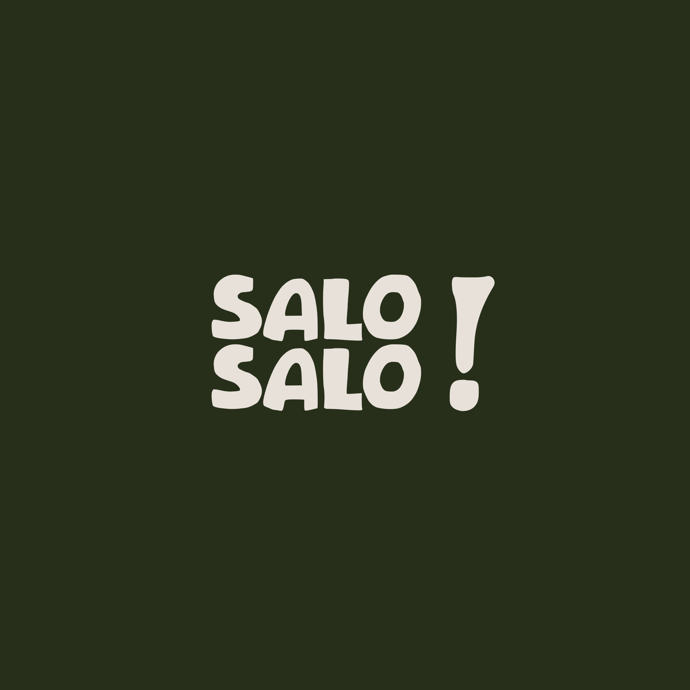
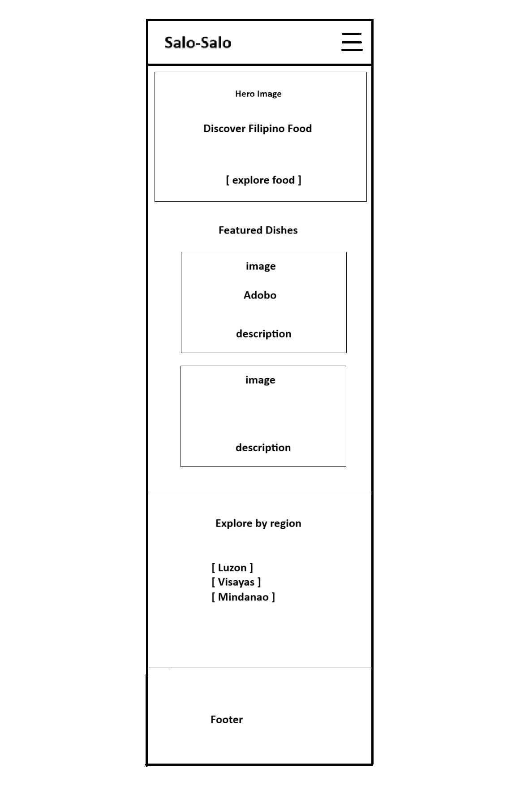
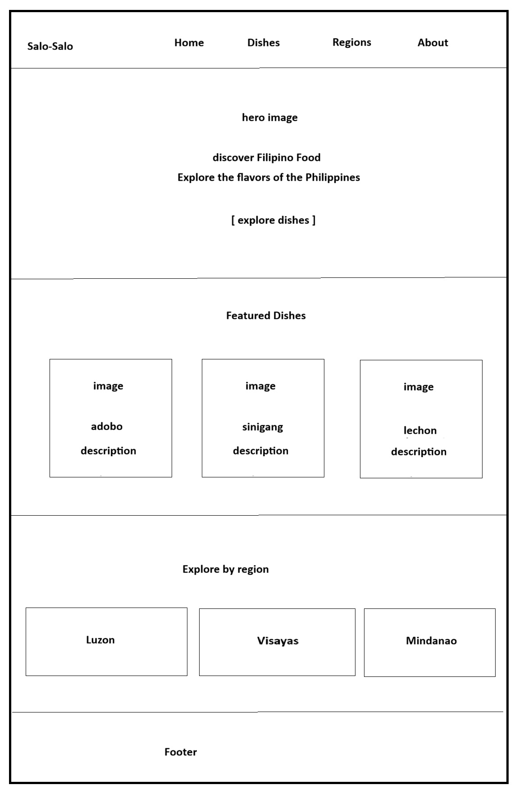

Salo-Salo

Salo-Salo means "mixed" or "assorted" in Tagalog, reflecting the diverse range of Filipino dishes that users can explore, learn from, and enjoy.
Possible domain: salo-salofoodguide.com
Site Purpose
The purpose of the Salo-Salo is to provide a comprehensive resource for exploring, learning about, and enjoying the rich diversity of Filipino cuisine. It also aims to preserve and promote the cultural significance of these delicious dishes, and invite users to try the recipes.
Scenarios
- What are some popular Filipino dishes that I should try?
- How can I make a traditional Filipino dish at home?
- What Filipino dishes come from different regions of the Philippines?
Color Scheme
Deep green #1B4332 - Header, navigation, headings
Warm Cream #F5F5DC - Main Background
Golden Yellow #F4B942 - Buttons and accents
Dark Brown #3D2B1F - Body text
White #FFFFFF - Cards and content sections
Typography
Poppins - Used for Headings
Open Sans - Used for Body Text
Wireframe

